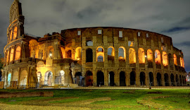
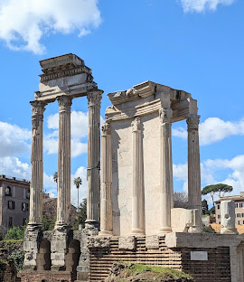
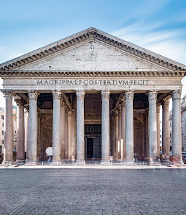
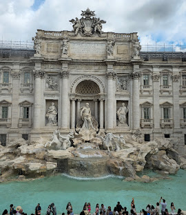
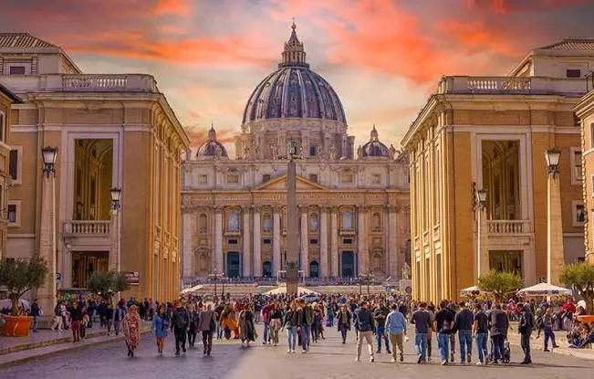

Rzym to stolica Włoch i jedno z najważniejszych miast w historii świata. Ma ponad 2700 lat i przez wiele wieków był centrum potężnego Imperium Rzymskiego. To właśnie tutaj powstało wiele budowli, które do dziś zachwycają turystów z całego świata. Rzym jest nazywany „Wiecznym Miastem”, ponieważ mimo upływu czasu zachował swoje zabytki i historyczny charakter. Każdego roku miliony ludzi przyjeżdżają tu, aby zobaczyć starożytne ruiny, piękne place oraz niezwykłą architekturę.

Koloseum to największy amfiteatr starożytnego Rzymu, zbudowany w I wieku naszej ery. Mógł pomieścić nawet około 50 tysięcy widzów. Odbywały się tam walki gladiatorów, polowania na dzikie zwierzęta oraz różnego rodzaju widowiska dla mieszkańców miasta. Dziś jest jednym z najbardziej rozpoznawalnych symboli Rzymu i całych Włoch.

Forum Romanum było centrum życia politycznego, religijnego i handlowego w starożytnym Rzymie. Znajdowały się tam świątynie, łuki triumfalne oraz budynki publiczne, w których podejmowano ważne decyzje dotyczące państwa. Dziś możemy oglądać ruiny tych budowli i wyobrażać sobie, jak wyglądało życie mieszkańców tysiące lat temu.

Panteon to jedna z najlepiej zachowanych budowli starożytnego Rzymu. Został zbudowany jako świątynia poświęcona wszystkim bogom. Najbardziej charakterystycznym elementem jest ogromna kopuła z okrągłym otworem na środku, przez który wpada światło. Budowla ta do dziś zachwyca swoją konstrukcją i precyzją wykonania.

Fontanna di Trevi to jedna z najbardziej znanych fontann na świecie. Została zbudowana w XVIII wieku i przedstawia boga mórz Neptuna. Według tradycji wrzucenie jednej monety przez lewe ramię gwarantuje powrót do Rzymu. Każdego dnia turyści wrzucają tam tysiące monet.

Plac św. Piotra znajduje się w Watykanie, który jest najmniejszym państwem świata. To jedno z najważniejszych miejsc dla katolików. Na placu odbywają się uroczystości religijne oraz spotkania z papieżem. Otaczają go piękne kolumnady, które nadają temu miejscu wyjątkowy wygląd.